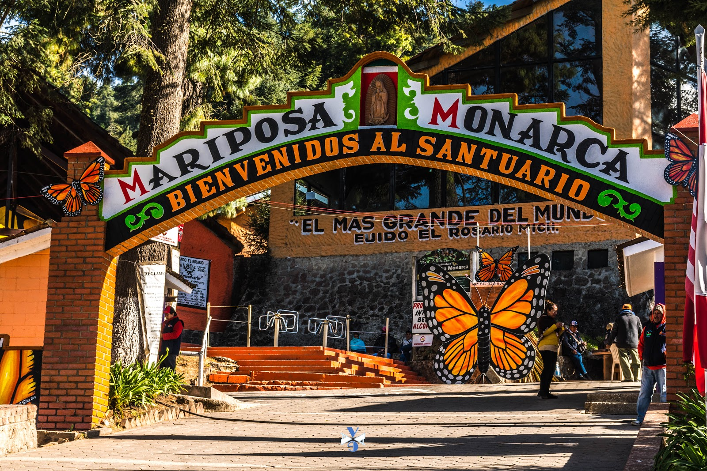

El refugio dorado de Michoacán. Sé testigo de uno de los fenómenos migratorios más asombrosos del planeta entre bosques de oyamel a 3,000 metros de altura.

Cada año, millones de mariposas monarca viajan más de 4,000 kilómetros desde Canadá y Estados Unidos para hibernar en los bosques de oyamel de El Rosario, formando racimos gigantes que pintan de naranja y negro el cielo de Michoacán.
Más que un destino turístico, es un santuario comunitario donde cada visita apoya directamente la conservación del bosque y a las familias ejidatarias que lo protegen.